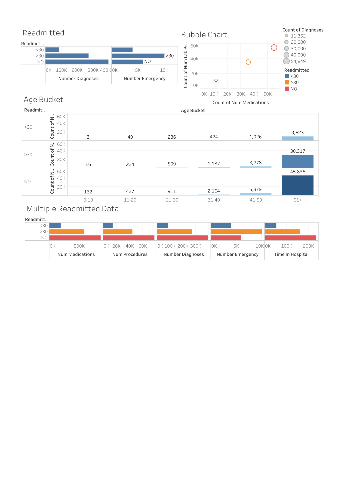
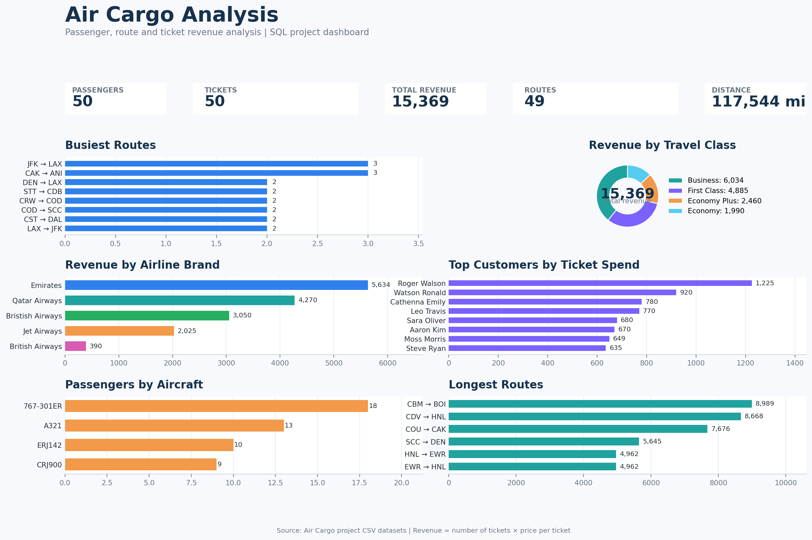
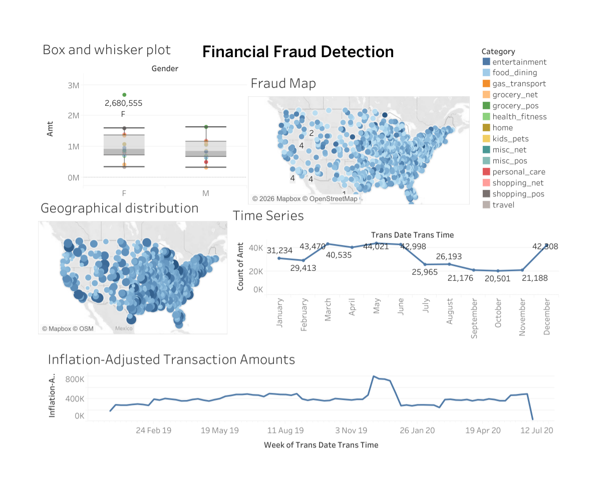

Data & Business Analyst | SQL | Power BI | Tableau | GenAI & Automation | Immediate Joiner
I am a Data & Business Analyst with 10 years of experience in data-driven operations, business requirements, data quality, regulatory analysis, and process optimization. At Thomson Reuters, I have worked with complex regulatory data, translating business and regulatory requirements into structured solutions, conducting data validation and UAT, identifying anomalies, and collaborating with cross-functional teams to ensure accurate and timely delivery.
My technical toolkit includes SQL, Python, Power BI, Tableau, Snowflake, Advanced Excel, Power Query, and DAX. I have also expanded my expertise into Generative AI and automation using Microsoft Copilot Studio and Power Automate. I enjoy transforming complex data into meaningful insights, improving processes through automation, and building solutions that support better business decisions.
Feb 2018 – Aug 2026
Jul 2016 – Jan 2018

End-to-end healthcare analytics using SQL, Python and Tableau to analyze patient readmission patterns, clinical factors and healthcare utilization.
Tools: SQL | Python | Tableau

SQL-based analysis of passengers, routes, ticket revenue and travel classes to identify key airline and customer insights.
Tools: SQL | Excel | Data Analysis

Analyzes transaction data to identify suspicious activity, anomalies and patterns associated with potential financial risk.
Tools: SQL | Python | Tableau
Geospatial analysis of multi-year crime data to identify crime trends, arrest patterns and geographic hotspots for actionable insights.
Tools: Tableau | Data Analysis